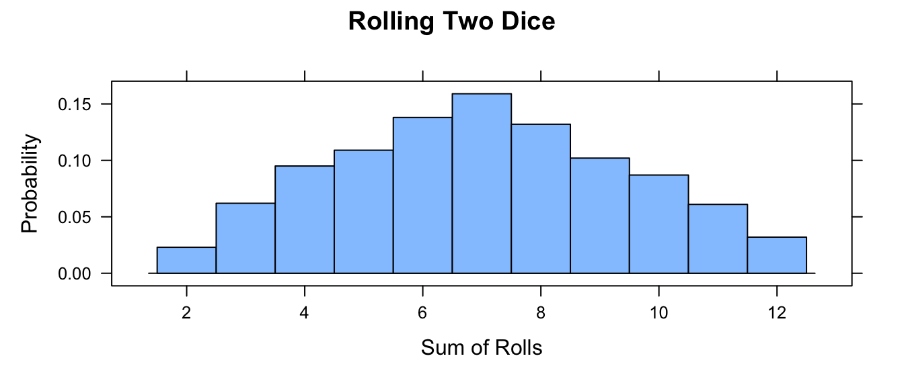
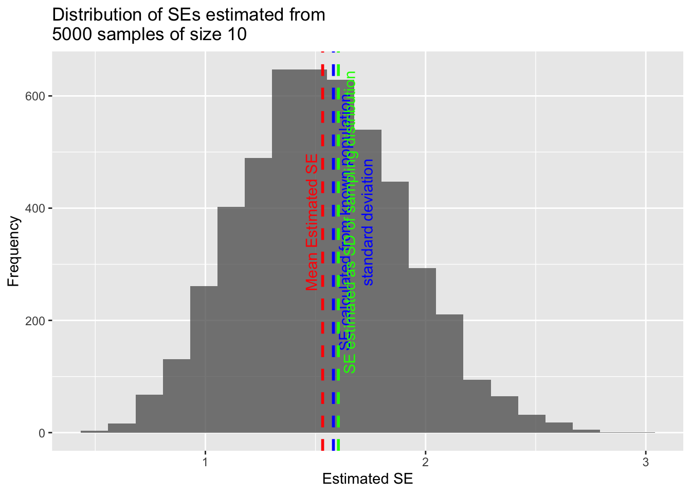

outcomes <- c(1, 2, 3, 4, 5, 6)
manipulate(histogram(sample(x = outcomes, size = n, replace = TRUE), breaks = c(0.5,
1.5, 2.5, 3.5, 4.5, 5.5, 6.5), type = "density", main = paste("Histogram of Outcomes of ",
n, " Die Rolls", sep = ""), xlab = "Roll", ylab = "Probability"), n = slider(0,
10000, initial = 100, step = 100))13 Probability and Distributions
13.1 Objectives
The objective of this module is to gently begin our discussion of statistical inference and statistical modeling. Doing so requires that we first cover some basics of probability and statistical distributions.
13.2 Preliminaries
- Install and load this package in R: {manipulate}
- Load {tidyverse}, {mosaic}, and {cowplot}
13.3 Probability
The term probability is applied to population-level variables to describe the magnitude of chance associated with particular observations or events. Probabilities summarize the relative frequencies of different possible outcomes and are properties of distributions of variables. Every variable has a distribution that can be described empirically and visualized, as we have done in some of our previous modules. And, sometimes, these empirical distributions are nicely approximated by particular theoretical distributions with well-known mathematical properties, a fact which forms the basis for traditional frequentist (or classical) statistical inference.
Probabilities for events or collections of events necessarily vary between zero and one. Outcomes or combinations of outcomes that are impossible have \(Pr = 0\), those that are certain have \(Pr = 1\).
EXAMPLE: If we roll a (fair, unbiased) die, there are 6 possible outcomes, and each has a probability of occurring of 1 in 6. We can estimate these probabilities using data on the outcome of lots of observations of independent die rolls. This is referred to as a frequentist or classical way of thinking about the probability of these different outcomes… the relative frequency with which a particular event occurs over numerous identical, independent, objective trials.
We will use the {manipulate} package and the sample() function to explore the effects of sample size on estimates of the probability of different outcomes of the a process of rolling a (fair, unbiased) die. The {manipulate} package allows us to create an interactive plot that lets us dynamically change something about the values being plotted. We will set up a simulation where the probability of each possible outcome of the process of rolling a die one time (“1”, “2”,…, “6”) is 1 in 6, but our estimate of the probability of each possible outcome will change with sample size. In the code below, we use the powerful sample() function, which takes several arguments - a set of elements to sample from (x=), the number of elements to draw (size=), and whether or not to draw with replacement (replace=). After typing in and running the code below, play with the slider to change the number of die rolls being simulated.
CHALLENGE
Write your own function, roll(), to simulate rolling a die where you pass the number of rolls as an argument (nrolls=) with a default value of 1. Then, use your function to simulate rolling two dice a total 1000 times and take the sum of the rolls. Plot a histogram of those results. What happens if you roll each die 100 times? 10,000 times?
Show Code
roll <- function(nrolls = 1) {
sample(1:6, nrolls, replace = TRUE)
} # function with default of 1 roll
nrolls <- 1000
two_dice <- roll(nrolls) + roll(nrolls)
histogram(two_dice, breaks = c(1.5:12.5), type = "density", main = "Rolling Two Dice",
xlab = "Sum of Rolls", ylab = "Probability")
13.4 Rules of Probability
The following are a set of standard rule of probability that are worth reviewing:
- \(Pr (+)\) = Probability that something occurs = 1
- \(Pr (\emptyset)\) = Probability that nothing occurs = 0
- \(Pr (A)\) = Probability that a particular event, \(A\), occurs
\[0 \leq Pr (A) \leq 1\]
- \(Pr (A \cup B)\) = Probability that a particular event \(A\) or a particular event \(B\) occurs = UNION
\[Pr (A \cup B) = Pr (A) + Pr (B) - Pr (A \cap B)\]
If events \(A\) and \(B\) are mutually exclusive, then this simplifies to… \[Pr (A) + Pr (B)\]
- \(Pr (A \cap B)\) = Probability that both \(A\) and \(B\) occur simultaneously = INTERSECTION
\[Pr (A \cap B) = Pr (A \vert B) \times Pr (B) = Pr (B \vert A) \times Pr (A)\]
The pipe operator ( \(\vert\) ) can be read as “given” and indicates conditional probability (see below)
If \(Pr (A \cap B) = 0\), then we say the events are mutually exclusive (e.g., you cannot have a die roll be 1 and 2)
If the two events are independent (i.e., if the probability of one does not depend on the probability of the other), then \(Pr (A \cap B)\) simplifies to… \[Pr (A) \times Pr (B)\]
Probability of the COMPLEMENT of \(A\) (i.e., not \(A\)) = \(Pr (Ā) = 1 - Pr (A)\)
CONDITIONAL PROBABILITY is the probability of an event occuring after taking into account the occurrence of another event, i.e., one event is conditioned on the occurrence of a different event. For example, the probability of a die coming up as a “1” given that we know the die came up as an odd number (“1”, “3”, or “5”) is a conditional probability.
\[Pr (A \vert B) = Pr (A \cap B) \div Pr (B)\]
If event \(A\) and event \(B\) are independent, then \[Pr (A \vert B) = [Pr (A) \times Pr (B) ] \div Pr (B) = Pr (A)\]
If event \(A\) and \(B\) are not independent, then \[Pr (A \vert B) ≠ Pr (A)\]
CHALLENGE
You have a deck of 52 cards… Ace to 10 plus 3 face cards in each suit. You draw a card at random.
- What is the probability that you draw a face card?
\(Pr (face\ card)\)
- 12 of 52 cards = 0.2307692
- What is the probability that you draw a King?
\(Pr(King)\)
- 3 of 52 cards = 0.05769231
- What is the probability that you draw a spade?
\(Pr(spade)\)
- 13 of 52 cards = 0.25
- What is the probability that you draw a spade given that you draw a face card? (CONDITIONAL, INDEPENDENT EVENTS)
Intuitively…
- 3 of 12 cards = 0.25
Formally…
\(Pr(spade \vert face\ card) = Pr(spade) \times Pr(face\ card) \div Pr(face\ card)\)
- (13 of 52) \(\times\) (12 of 52) \(\div\) (12 of 52) = 0.25
- What is the probability that you draw a King given that you draw a face card? (CONDITIONAL, NOT INDEPENDENT EVENTS)
Intuitively…
- 4 of 12 cards = 0.3333333
Formally…
\(Pr(King \vert face\ card) = Pr(King \cap face\ card) \div Pr(face\ card) =\)
\(Pr(face\ card \vert King) \times Pr(King) \div Pr(face\ card)\)
- 1 \(\times\) (4 of 52) \(\div\) (12 of 52) = 0.3333333
- What is the probability that you draw a card that is both from a red suit (hearts or diamonds) and a face card? (INTERSECTION, INDEPENDENT EVENTS)
Intuitively…
- 6 of 52 cards = 0.1153846
Formally…
\(Pr (red \cap face\ card) = Pr (red \vert face\ card) \times Pr (face\ card) =\)
\([Pr(red) \times Pr(face\ card)] \div Pr(face\ card) \times Pr(face\ card)\)
where…
\(Pr (red)\)
- 26 of 52 cards = 0.5
\(Pr (face\ card)\)
- 12 of 52 cards = 0.2307692
so…
- [(26 of 52) \(\times\) (12 of 52)] \(\div\) (12 of 52) \(\times\) (12 of 52) = 0.1153846
- What is the probability that you draw a card that is either a club or not a face card? (UNION, NOT INDEPENDENT EVENTS)
Intuitively…
- (13 club cards \(+\) 40 not face cards \(-\) 10 club cards that are not face cards) of 52 cards = 43 of 52 cards = 0.8269231
Formally…
\(Pr (club \cup not\ a\ face\ card) =\)
\(Pr (club) + Pr (not\ a\ face\ card) - Pr (club \cap not\ a\ face\ card) =\)
\(Pr (club) + Pr (not\ a\ face\ card) - Pr (club \vert not\ a\ face\ card) \times Pr (not\ a\ face\ card)\)
where…
\(Pr (club)\)
- 13 of 52 cards = 0.25
\(Pr (not\ a\ face\ card)\)
- 40 of 52 cards = 0.7692308
\(Pr (club \vert not\ a\ face\ card)\)
- 10 of 40 = 0.25
so…
- (13 of 52) \(+\) (40 of 52) \(-\) [(10 of 40) \(\times\) (40 of 52)] = 0.8269231
13.5 Random Variables
A random variable is a variable whose outcomes are assumed to arise by chance or according to some random or stochastic process. The chances of observing a specific outcome, or an outcome value within a specific interval, has associated with it a probability.
Random variables come in two varieties:
- Discrete Random Variables are random variables that can assume only a countable number of discrete possibilities (e.g., counts of outcomes in a particular category, e.g., rolls of a die). We can assign a probability to each possible outcome.
- Continuous Random Variables are random variables that can assume any real number value within a given range (e.g., measurements of body weight, number of offspring, linear dimensions, etc.). We cannot assign a specific probability to each possible outcome value as the set of possible outcomes is (theoretically) infinite, but we can assign probabilites to intervals of outcome values.
With these basics in mind, we can define a few more terms:
A probability function is a mathematical function that describes the chance associated with a random variable either having particular outcomes (for discrete variables) or falling within a given range of outcome values (for continuous variables). Familiar statistical distributions (e.g., the normal distribution, the beta distribution, the Poisson distribution) are all examples of probability functions.
We can distinguish two types of probability functions, associated with these different kinds of random variables.
Probability Mass Functions
Probability Mass Functions (PMFs) are associated with discrete random variables. These functions describe the probability that a random variable takes a particular discrete value.
To be a valid PMF, a function \(f(x)\) must satisfy the following conditions:
- There are \(k\) distinct outcomes \(x_1, x_2, ... ,x_k\)
- \(0 \leq Pr (X=x_i) \leq 1\) for all \(x_i\)
- \(\sum\limits_{i=1}^{k} Pr (X=x_i) = 1\)
EXAMPLE: Flipping a Fair Coin
outcomes <- c("heads", "tails")
prob <- c(1/2, 1/2)
barplot(prob, ylim = c(0, 0.6), names.arg = outcomes, space = 0.1, xlab = "outcome",
ylab = "Pr(X = outcome)", main = "Probability Mass Function")cumprob <- cumsum(prob)
cumoutcomes <- c("heads", "heads + tails")
barplot(cumprob, names.arg = cumoutcomes, space = 0.1, xlab = "outcome", ylab = "Cumulative Pr(X)",
main = "Cumulative Probability")EXAMPLE: Rolling a Fair Die
outcomes <- c(1, 2, 3, 4, 5, 6)
prob <- c(1/6, 1/6, 1/6, 1/6, 1/6, 1/6)
barplot(prob, ylim = c(0, 0.5), names.arg = outcomes, space = 0.1, xlab = "outcome",
ylab = "Pr(X = outcome)", main = "Probability Mass Function")cumprob <- cumsum(prob)
cumoutcomes <- c("1", "1 to 2", "1 to 3", "1 to 4", "1 to 5", "1 to 6")
barplot(cumprob, names.arg = cumoutcomes, space = 0.1, xlab = "outcome", ylab = "Cumulative Pr(X)",
main = "Cumulative Probability")Probability Density Functions
Probability Density Functions (PDFs) are associated with continuous random variables. These functions describe the probability that a random variable falls within a given range of outcome values. The probability associated with that range equals the area under the density function for that range.
To be a valid PDF, a function \(f(x)\) must satisfy the following:
- \(f(x)\geq 0\) for all \(-\infty \leq x \leq +\infty\). That is, the function \(f(x)\) is non-negative everywhere.
- \(\int_\limits{-\infty}^{+\infty} f(x) dx = 1\). That is, the total area under the function \(f(x)\) = 1
Example: Exploring the Beta Distribution
The Beta Distribution refers to a family of continuous probability distributions defined over the interval [0, 1] and parameterized by two positive shape coefficients, denoted by \(\alpha\) and \(\beta\), that appear as exponents of the random variable \(x\) and control the shape of the distribution. The beta distribution function is…
\[f(x) = x^{\alpha-1}(1-x)^{\beta-1}\]
NOTE: There is nothing special about the Beta Distribution for this example, we are just using it to show how probabilities are equivalent to areas under a function.
We can explore the beta distribution using the {manipulate} package by entering the code below. With the domain of \(x\) restricted to [0, 1], and with \(\alpha\) initially set to 2 and \(\beta\) initially set to 1, we see the PDF for the beta distribution is triangular. Try playing with different values for \(\alpha\) and \(\beta\). The dbeta() function provides the value of the function at the specified values of x.
manipulate(ggplot(data = data.frame(x = c(0, 1)), aes(x)) + stat_function(fun = dbeta,
args = list(shape1 = alpha, shape2 = beta), n = 1000) + xlab("x") + ylab("f(x)") +
labs(title = "Exploring the Beta Distribution", subtitle = paste0("Cumulative Probability = ",
round(pbeta(x, alpha, beta), 2))) + stat_function(fun = dbeta, xlim = c(0,
x), args = list(shape1 = alpha, shape2 = beta), n = 1000, geom = "area"), alpha = slider(0,
10, initial = 2, step = 0.1), beta = slider(0, 10, initial = 1, step = 0.1),
x = slider(0, 1, initial = 0, step = 0.01))Is this a PDF? Why or why not? Yes… it satisfies both criteria for a PDF.
- \(f(x) \geq 0\) for all \(-\infty \leq x \leq +\infty\)
- The total area under \(f(x)\) = 1
We can show this interactively by playing with the slider for \(x\) and looking at the shaded area, which represents the cumulative probability integrated across \(f(x)\) from \(-\infty\) to \(x\).
Cumulative Distribution Functions
The cumulative distribution function, or CDF, of a random variable is defined as the probability of observing a random variable \(X\) taking the value of \(x\) or less, i.e., \(F(x) = Pr (X \leq x)\).
This definition actually applies regardless of whether \(X\) is discrete or continuous. Note here we are using the notation \(F(x)\) for the cumulative distribution function rather than \(f(x)\), which we use for the probability density or mass function. For a continuous variable, the PDF is simply the first derivative of the CDF, i.e., \(f(x) = dF(x)\).
The built in R “probability” function for the Beta Distribution, pbeta(), gives us this cumulative probability directly, if we specify the values of \(\alpha\) and \(\beta\). E.g., for \(\alpha\) = 2 and \(\beta\) = 1…
pbeta(0.75, 2, 1) # cumulative probability for x ≤ 0.75## [1] 0.5625pbeta(0.5, 2, 1) # cumulative probability for x ≤ 0.50## [1] 0.25In general, we find the cumulative probability for a continuous random variable by calculating the area under the probability density function of interest from \(-\infty\) to \(x\). This is what is is being returned from pbeta().
The other related R functions for the Beta Distribution, i.e.,
rbeta(),dbeta(), andqbeta(), are also useful.rbeta()draws random observations from a specfied beta distribution.dbeta()gives the point estimate of the beta density function at the value of the argument \(x\), andqbeta()is essentially the converse ofpbeta(), i.e., it tells you the value of \(x\) that is associated with a particular cumulative probability, or quantile, of the cumulative distribution function.
dbeta(0.75, 2, 1)## [1] 1.5qbeta(0.5625, 2, 1)## [1] 0.75We can also define the survival function for a random variable \(X\) as:
\[S(x) = Pr (X \gt x) = 1 - Pr (X \leq x) = 1 - F(x)\]
PMFs and PDFs for many other standard or well studied distributions have comparable r, d, p, and q functions to those for the Beta Distribution.
TL/DR: R has four built-in functions that can be applied to a variety of standard and well understood statistical distributions:
r- the random generation function, which draws a random variable from the given distribution.d- the density function, PMF or PDF, which describes the distribution of values for the function across the range of \(x\) values: \(f(x)\).p- the cumulative distribution function, CDF, which gives the cumulative probability for all values from \(-\infty\) to \(x\) for a given distribution: \(F(x)\) = Pr \((X\) \(\leq\) \(x)\).q- the quantile function, which is the converse ofp: the value of \(x\) at which the CDF has the value \(q\), i.e., \(F(x_q) = q\).
Note the relationship between the p and q functions:
pbeta(0.7, 2, 1) # yields 0.49 - x values ≤ 0.7 comprise 49% of the CDF## [1] 0.49qbeta(0.49, 2, 1) # yields 0.7 - 49% of the CDF falls in the range x ≤ 0.7## [1] 0.7Expected Mean and Variance
The mean value (or expectation) of a discrete random variable with a given probability mass function is equivalent to a “long-term average”, i.e., what you would expect the average value of the variable to be if you sampled from the PMF many, many times. This expectation can be expressed generally as follows:
\[\mu_X = Expectation\ for\ X = \sum x_i \times Pr (X=x_i)\ for\ all\ x\ from\ x_i\ to\ x_k\]
Likewise, the expected variance of a discrete random variable, \(X\), across a large sample from the PMF is:
\[\sigma_X^2 = Variance\ of\ X = \sum (x_i - \mu_X)^2 \times Pr (X=x_i)\ for\ all\ x\ from\ x_i\ to\ x_k\]
Applying these formulae to die rolls, we could calculate the expectation for \(X\) for a large set of die rolls as follows…
\[(1 \times 1/6) + (2 \times 1/6)\ +\ ...\ +\ (6 \times 1/6) = 3.5\]
m <- sum(seq(1:6) * 1/6)
m## [1] 3.5And the expected variance would be…
\[[(1 - 3.5)^2 \times (1/6)]\ +\ [(2 - 3.5)^2 \times (1/6)]\ +\ ...\ +\ [(6 - 3.5)^2 \times (1/6)] = 2.916667\]
var <- sum((seq(1:6) - mean(seq(1:6)))^2 * (1/6))
var## [1] 2.916667Likewise, we can calculate the expectation and variance for a continuous random variable, \(X\), with a given probability density function generally as follows:
\[\mu_X = Expectation\ for\ X = \int\limits_{-\infty}^{+\infty} x f(x) dx\]
\[\sigma_X^2 = Variance\ of\ X = \int\limits_{-\infty}^{+\infty} (x - \mu_X)^2 f(x) dx\]
NOTE: To demonstrate these numerically would require a bit of calculus, i.e., integration, which we will not go through here.
13.6 Useful Probability Distributions
Probability Mass Functions
The Bernoulli Distribution
The Bernoulli Distribution is the probability distribution of a binary random variable, i.e., a variable that has only two possible outcomes, such as success or failure, heads or tails, true or false. If \(p\) is the probability of one outcome, then \(1-p\) has to be the probabilty of the alternative. For flipping a fair coin, for example, \(p\) = 0.5 and \(1-p\) also = 0.5.
For the Bernoulli Distribution, the probability mass function is:
\[f(x) = p^x(1-p)^{1-x}\]
where x = {0 or 1}
For this distribution, the expectation and variance across a large set of trials would be: \(\mu_X = p\) and \(\sigma_X^2 = p(1-p)\)
CHALLENGE
Using the Bernoulli distribution, calculate the expectation for drawing a spade from a deck of cards? What is the variance in this expectation across a large number of draws?
\[Pr (spade) = (13/52)^1 \times (39/52)^0 = 0.25\]
\[Var (spade) = (13/52) \times (1-13/52) = (0.25) \times (0.75) = 0.1875\]
In code, we can simulate this…
reps <- 1e+05
card <- sample(1:52, reps, replace = TRUE)
spade <- ifelse(card <= 13, TRUE, FALSE)
(exp_spade <- sum(spade)/reps)## [1] 0.25141(exp_var_spade <- var(spade))## [1] 0.1882049The Binomial Distribution
The Bernoulli distribution is a special case of the Binomial Distribution. The binomial distribution is typically used to model the probability of a number of “successes”, k, out of a set of “trials”, n, i.e., for counts of a particular outcome.
Again, the probability of success on each trial = \(p\) and the probability of not success = \(1-p\).
For the Binomial Distribution, the probability mass function is:
\[f(x)=\binom{n}{k} p^k (1-p)^{n-k}\]
where \(x\) = {0, 1, 2, … , n} and where
\[\binom{n}{k}=\frac{n!}{k!(n-k)!}\]
This is read as “\(n\) choose \(k\)”, i.e., the probability of \(k\) successes out of \(n\) trials. This is also called the “binomial coefficient”.
For this distribution, the expectation (i.e., expected number of successes out of \(k\) trials) and the expected variance are as follows:
\[\mu_X = np\] and
\[\sigma_X^2 = np(1-p)\]
Recall, \(\mu_X\) = expected number of successes in \(n\) trials. Where \(n\) = 1, the binomial distribution simplifies to the Bernoulli distribution.
CHALLENGE
- What is the chance of getting a “1” on each of six consecutive rolls of a die? Recall that rolling a “1” = a success, while rolling something other than a “1” is not a success.
- What about of getting exactly three “1”s (i.e., 3 successes).
- What is the expected number of “1”s to occur in six consecutive rolls (i.e., what is the expected number of successes) and the variance around that expectation?
n <- 6 # number of trials
k <- 6 # exact number of successes
p <- 1/6
(all_ones <- (factorial(n)/(factorial(k) * factorial(n - k))) * (p^k) * (1 - p)^(n -
k))## [1] 2.143347e-05k <- 3 # exact number of successes
(three_ones <- (factorial(n)/(factorial(k) * factorial(n - k))) * (p^k) * (1 - p)^(n -
k))## [1] 0.05358368# expected number of successes
(expected_ones <- n * p)## [1] 1(expected_variance <- n * p * (1 - p))## [1] 0.8333333As for other distributions, R has a built in d (density) function, the dbinom() function, that you can use to solve for the probability of a given outcome directly, i.e., Pr \((X = x)\).
dbinom(x = k, size = n, prob = p)## [1] 0.05358368We can also use the built in function pbinom() to return the value of the cumulative distribution function for the binomial distribution, i.e., the probability of observing up to and including a given number of successes in \(n\) trials.
So, for example, the chances of observing exactly 0, 1, 2, 3, … 6 rolls of “1” on 6 rolls of a die are…
probset <- dbinom(x = 0:6, size = 6, prob = 1/6)
# x is number of successes, size is number of trials
barplot(probset, names.arg = 0:6, space = 0, xlab = "outcome = # of 'ones' seen in 6 rolls",
ylab = "Pr(X = outcome)", main = "Probability Mass Function")cumprob = cumsum(probset)
barplot(cumprob, names.arg = 0:6, space = 0.1, xlab = "outcome", ylab = "Cumulative Pr(X)",
main = "Cumulative Probability")sum(probset) # equals 1, as it should## [1] 1The chance of observing exactly 3 rolls of “1” is…
dbinom(x = 3, size = 6, prob = 1/6)## [1] 0.05358368And the chance of observing up to and including 3 rolls of “1” in 6 rolls is…
pbinom(q = 3, size = 6, prob = 1/6)## [1] 0.991298# note the name of the argument is `q=` not `x=`… which can also be calculated by summing the relevant individual outcome probabilities…
# this sums the probabilities of 0, 1, 2, and 3 successes
sum(dbinom(x = 0:3, size = 6, prob = 1/6))## [1] 0.991298The probability of observing more than 3 rolls of “1” is given as…
1 - pbinom(q = 3, size = 6, prob = 1/6)## [1] 0.008701989or, alternatively…
pbinom(q = 3, size = 6, prob = 1/6, lower.tail = FALSE)## [1] 0.008701989The probability of observing three or more rolls of “1” is…
1 - pbinom(q = 2, size = 6, prob = 1/6)## [1] 0.06228567# note here that the `q=` argument is '2'or, alternatively…
pbinom(q = 2, size = 6, prob = 1/6, lower.tail = FALSE)## [1] 0.06228567Above, we were using the theoretical binomial distribution to answer our questions about expectations… Let’s do this same process by simulation!
# simulate num_rolls rolls reps times
reps <- 1e+06
num_rolls <- 6
# set up vectors to hold simulation results
all_ones <- vector(mode = "logical", length = reps)
three_ones <- vector(mode = "logical", length = reps)
count_ones <- vector(mode = "logical", length = reps)
for (i in 1:reps) {
rolls <- sample(c(1, 2, 3, 4, 5, 6), size = num_rolls, replace = TRUE)
all_ones[[i]] <- all(rolls == 1)
if (sum(rolls == 1) == 3) {
three_ones[[i]] <- TRUE
} else {
three_ones[[i]] <- FALSE
}
count_ones[[i]] <- sum(rolls == 1)
}
# all 'ones' in 6 rolls
sum(all_ones)/reps## [1] 1.9e-05# three 'ones' in 6 rolls
sum(three_ones)/reps## [1] 0.053309# expected # 'ones' in 6 rolls
mean(count_ones)## [1] 0.999897# variance in expected # 'ones' across rolls
sum((count_ones - mean(count_ones))^2)/(length(count_ones))## [1] 0.831043The Poisson Distribution
The Poisson Distribution is often used to model open ended counts of independently occuring events, for example the number of cars that pass a traffic intersection over a given interval of time or the number of times a monkey scratches itself during a given observation interval. The probability mass function for the Poisson distribution is described by a single parameter, \(\lambda\), where \(\lambda\) can be interpreted as the mean number of occurrences of the event in the given interval.
The probability mass function for the Poisson Distribution is:
\[f(x)=\frac{\lambda^x\exp(-\lambda)}{x!}\]
where \(x\) = {0, 1, 2, …}
For this distribution, \(\mu_X = \lambda\) and \(\sigma_X^2 = \lambda\)
Note that for the Poisson Distribution the mean and the variance are the same!
Let’s use R and the {moasic} package to look at the probability mass functions for different values of \(\lambda\):
l <- 3.5
p1 <- plotDist("pois", lambda = l, main = paste0("Poisson Distribution\nwith lambda=",
l), xlab = "x", ylab = "Pr(X=x)")
l <- 10
p2 <- plotDist("pois", lambda = l, main = paste0("Poisson Distribution\nwith lambda=",
l), xlab = "x", ylab = "Pr(X=x)")
l <- 20
p3 <- plotDist("pois", lambda = l, main = paste0("Poisson Distribution\nwith lambda=",
l), xlab = "x", ylab = "Pr(X=x)")
plot_grid(p1, p2, p3, nrow = 1)As we did for other distributions, we can also use the built in p function for the Poisson distribution, ppois(), to return the value of the cumulative distribution function, i.e., the probability of observing up to and including a specific number of events in the given interval.
l <- 3.5
p1 <- plotDist("pois", lambda = l, kind = "cdf", main = paste0("Cumulative Probability\nwith lambda=",
l), xlab = "x", ylab = "Pr(X≤x)", type = "l")
l <- 10
p2 <- plotDist("pois", lambda = l, kind = "cdf", main = paste0("Cumulative Probability\nwith lambda=",
l), xlab = "x", ylab = "Pr(X≤x)", type = "l")
l <- 20
p3 <- plotDist("pois", lambda = l, kind = "cdf", main = paste0("Cumulative Probability\nwith lambda=",
l), xlab = "x", ylab = "Pr(X≤x)", type = "l")
plot_grid(p1, p2, p3, nrow = 1)Probability Density Functions
The Uniform Distribution
The Uniform Distribution is the simplest probability density function describing a continuous random variable. The probability is uniform and does not fluctuate across the range of \(x\) values in a given interval.
The probability density function for the Uniform Distribution is:
\[f(x)=\frac{1}{b-a}\]
where \(a \leq x \leq b\) and the function is 0 for \(x < a\) and \(x > b\)
What would you predict the expectation (mean) should be for a uniform distribution? Not surprisingly, for this distribution:
\[\mu_x = \frac{a+b}{2}\]
and
\[\sigma_x^2 = \frac{(b-a)^2}{12}\]
Let’s plot a uniform distribution across a given range, from \(a\) = 4 to \(b\) = 8…
a <- 4
b <- 8
x <- seq(from = a - 1, to = b + 1, by = 0.01)
fx <- dunif(x, min = a, max = b) # dunif() evaluates the density at each x
plot(x, fx, ylim = c(0, max(fx) + 0.1), type = "l", xlab = "x", ylab = "f(x)", main = "Probability Density Function")Note that for the uniform distribution, the cumulative density function increases linearly over the given interval.
# punif() is the cumulative probability density up to a given x
plot(x, punif(q = x, min = a, max = b), ylim = c(0, 1.1), type = "l", xlab = "x",
ylab = "Pr(X ≤ x)", main = "Cumulative Probability")CHALLENGE
Simulate a sample of 10,000 random numbers from a uniform distribution in the interval between \(a\) = 6 and \(b\) = 8. Calculate the mean and variance of this simulated sample and compare it to the expectation for these parameters.
Show Code
a <- 6
b <- 8
nums <- runif(n = 10000, min = a, max = b)
(m <- mean(nums))Show Output
## [1] 7.009949Show Code
(v <- var(nums))Show Output
## [1] 0.3382361Show Code
(expected_mean <- (a + b)/2)Show Output
## [1] 7Show Code
(expected_variance <- ((b - a)^2)/12)Show Output
## [1] 0.3333333The Normal Distribution
The Normal or Gaussian Distribution is perhaps the most familiar and most commonly applied probability density functions for modeling continuous random variables. Why is the normal distribution so important? Well, many traits are normally distributed, and the additive combination of many random factors is also commonly normally distributed. Even more importantly, as we will see in Module 14, the sampling distribution for many summary statistics (e.g., sample means) tends to be normally distributed when sample size is sufficiently large, and this fact is central to statistical inference.
For the normal distribution, two parameters, \(\mu\) and \(\sigma\), are used to describe the shape of the distribution.
The code below allows us to visualize and play around with a normal distribution. First, try maniupulating \(\mu\) and \(\sigma\).
manipulate(ggplot(data = data.frame(x = c(mu - 6 * sigma, mu + 6 * sigma)), aes(x)) +
stat_function(fun = dnorm, args = list(mean = mu, sd = sigma), n = 1000) + xlab("x") +
ylab("f(x)") + labs(title = "Exploring the Normal Distribution", subtitle = paste0("Probability ± ",
n_sigma, " SD around Mean = ", round(pnorm(mu + n_sigma * sigma, mu, sigma) -
pnorm(mu - n_sigma * sigma, mu, sigma), 4))) + stat_function(fun = dnorm,
xlim = c(mu - n_sigma * sigma, mu + n_sigma * sigma), args = list(mean = mu,
sd = sigma), n = 1000, geom = "area", fill = "red", alpha = 0.5, color = "red"),
mu = slider(-100, 100, initial = 0, step = 10), sigma = slider(0, 30, initial = 5,
step = 1), n_sigma = slider(0, 4, initial = 0, step = 0.25))The function, dnorm() gives the value of the normal probabilty density function at a given value of \(x\). \(x\) can range from -\(\infty\) to +\(\infty\). [Recall, it does not really make sense to talk about the “probability” associated with a given specific value of a continuous variable as this is a density not a mass function… but we can talk about the probability of \(x\) falling within a given interval.]
The pnorm() function, as with the p function for other distributions, returns the cumulative probability of observing a value less than or equal to a given value of \(x\), i.e., Pr \((X\) \(\leq\) \(x)\). We can use the pnorm() function to calculate the probability of an observation drawn from the population falling within a particular, arbitrary interval.
For example, for a normally distributed population variable with \(\mu\) = 6 and \(\sigma\) = 2, the probability of a random observation falling between 7 and 8 is…
p <- pnorm(8, mean = 6, sd = 2) - pnorm(7, mean = 6, sd = 2)
p## [1] 0.1498823In the code above, this is what we are doing when we play interactively with \(n\_sigma\)… we are using the difference between two pnorm() calculations to determine the probability of an observation falling within \(n\_sigma\) standard deviations of the mean of a particular normal distribution.
NOTE: Regardless of the specific values of \(\mu\) and \(\sigma\), about 95% of the normal distribution falls within 2 standard deviations of the mean, and about 68% of the distribution falls within 1 standard deviation. Check this out by playing with the \(n\_sigma\) slider.

Another one of the family of normal distribution functions in R - the qnorm() or quantile function - will tell us the value of \(x\) below which a given proportion of the cumulative probability function falls. For example, if we wanted to see the value of \(x\) below which 2.5% of a normal distribution with mean of 5 and standard deviation of 6 falls, we could run the following:
qnorm(0.025, mean = 5, sd = 3, lower.tail = TRUE)## [1] -0.879892# lower.tail = TRUE by default...if we used lower.tail = FALSE this would give
# us the value of x for the upper.tail of the distributionCHALLENGE
- Create a vector, v, containing n random numbers selected from a normal distribution with mean \(\mu\) and standard deviation \(\sigma\). Use 1000 for n, 3.5 for \(\mu\), and 4 for \(\sigma\).
HINT: Such a function exists!
rnorm(). We also callset.seed()beforernorm()so that each time this function is run, it returns the same sequence of random numbers until the seed is reset.
- Calculate the mean, variance, and standard deviation for your sample of random numbers.
- Plot a histogram of your random numbers.
Show Code
n <- 1000
mu <- 3.5
sigma <- 4
set.seed(1)
v <- rnorm(n, mu, sigma)
mean(v)Show Output
## [1] 3.453407Show Code
var(v)Show Output
## [1] 17.13681Show Code
sd(v)Show Output
## [1] 4.139663Show Code
histogram(v, main = paste0("Random Draws from a Normal Distribution\nwith Mean = ",
mu, " and SD = ", sigma), type = "density", center = mu)We can easily plot the density and cumulative probability functions for this normal distribution using the plotDist() function from the {mosaic} package:
pdf <- plotDist("norm", mean = mu, sd = sigma, xlab = "X", ylab = "Density")
cdf <- plotDist("norm", mean = mu, sd = sigma, kind = "cdf", xlab = "X", ylab = "Cumulative Probability")
plot_grid(pdf, cdf)Q-Q Plots
A quantile-quantile or Q-Q plot can be used to look at whether a set of data seem to follow a normal distribution. A Q–Q plot is a general graphical method for comparing two probability distributions. To examine a set of data for normality graphically, you plot the quantiles for your actual data (as the y values) versus theoretical quantiles (as the x values) pulled from a normal distribution. If the two distributions being compared are similar, the points in the plot should lie approximately on the line y = x.
If we do this for the random variables we just generated, this should be apparent since we have simulated our initial vector of data from a normal distribution.
To quickly do a Q-Q plot, call the two R functions qqnorm() and qqline() using the vector of data you want to examine as an argument.
qqnorm(v, main = "QQ Plot - Random Normal Variable")
qqline(v, col = "gray")This is the same as doing the following:
- Step 1: Generate a sequence of probability points in the interval from 0 to 1 equivalent in length to vector v:
p <- ppoints(length(v))
# the `ppoints()` function generates evenly distributed points between 0 and 1
head(p)## [1] 0.0005 0.0015 0.0025 0.0035 0.0045 0.0055tail(p)## [1] 0.9945 0.9955 0.9965 0.9975 0.9985 0.9995- Step 2: Calculate the theoretical quantiles for this set of probabilities based on the distribution you want to compare to (in this case, the normal distribution):
theoretical_q <- qnorm(p)
# generates quantiles for each p based on a normal distribution (in this case,
# the standard normal)- Step 3: Calculate the quantiles for your set of observed data for the same number of points:
observed_q <- quantile(v, ppoints(v)) # finds quantiles in our actual data- Step 4: Plot these quantiles against one another:
plot(theoretical_q, observed_q, main = "QQ Plot - Random Normal Variable", xlab = "Theoretical Quantiles",
ylab = "Sample Quantiles")CHALLENGE
What happens if you simulate fewer observations in your vectors? Try with n = 100.
Show Code
n <- 100
mu <- 3.5
sigma <- 4
v <- rnorm(n, mu, sigma)
qqnorm(v, main = "QQ Plot - Random Normal Variable")
qqline(v, col = "gray")Show Code
# with fewer simulated points, line isn't quite as good a fitWhat happens if you simulate observations from a different distribution?
Show Code
n <- 1000
v <- rbeta(n, shape1 = 1.3, shape2 = 2)
qqnorm(v, main = "QQ Plot - Random Beta Variable")
qqline(v, col = "gray")Show Code
# with a different distribution, Q-Q plot isn't linear!The “Standard Normal” Distribution
Any normal distribution with mean \(\mu\) and standard deviation \(\sigma\) can be converted into what is called the standard normal distribution, where the mean is 0 and the standard deviation is 1. This is done by subtracting the mean from all observations and dividing these differences by the standard deviation. The resultant values are referred to a Z scores, and they reflect the number of standard deviations an observation is from the mean.
mu <- 5
sigma <- 8
# simulate from a normal distribution with mean 5 and SD 8
x <- rnorm(10000, mean = mu, sd = sigma)
x_plot <- histogram(x, center = mu, main = paste0("Mean = ", round(mean(x), 3), "\nSD = ",
round(sd(x), 3)))
# standardize the scores
z <- (x - mean(x))/sd(x)
z_plot <- histogram(z, center = 0, main = paste0("Mean = ", round(mean(z), 3), "\nSD = ",
round(sd(z), 3)))
plot_grid(x_plot, z_plot)13.7 Sampling Distributions Redux
It is important to recognize that, above, we were dealing with probability distributions of discrete and continuous random variables as they relate to populations. But, as we have talked about before, we almost never measure entire populations… instead, we measure samples from populations and we characterize our samples using various statistics. The theoretical probability distributions described above (and others) are models for how we connect observed sample data to populations, taking into account various assumptions, and this is what allows us to do many types of inferential statistics. The most fundamental assumption is that the observations we make are independent from one another and are identically distributed, an assumption often abbreviated as iid. Obvious cases of violation of this assumption are rife in the scientific literature, and we should always be cautious about making this assumption!
However, the important thing for us to know is that we can get unbiased estimates of population level parameters based on sample statistics.

CHALLENGE
Let’s imagine a population of 1 million zombies whose age at zombification is characterized by a normal distribution with a mean of 25 years and a standard deviation of 5 years.
Create a variable x that describes this population and calculate the mean and standard deviation of the age at zombification.
Show Code
set.seed(1)
x <- rnorm(1e+06, 25, 5)
histogram(x, type = "density")Show Code
(mu <- mean(x)) # population meanShow Output
## [1] 25.00023Show Code
(sigma <- sqrt(sum((x - mean(x))^2)/length(x))) # population SDShow Output
## [1] 5.000924NOTE: We do not use the
sd()function as this would divide bylength(x)-1. Check that out usingsd(x)
sd(x)## [1] 5.000926Now, suppose we now sample from the zombie population by trapping sets of zombies and determining the mean age at zombification in each set. We sample without replacement from the original population for each set…
CHALLENGE
Create a loop to sample the zombie population 5000 times with samples of size 10 and store these results in a list, s.
Show Code
k <- 5000 # number of samples
n <- 10 # size of each sample
s <- list() # create a dummy variable to hold each sample
# dummy variable needs to be a list, not a vector, since each element will hold
# a vector of numbers
for (i in 1:k) {
s[[i]] <- sample(x, size = n, replace = FALSE)
}
head(s, 1) # an example of one sample of 10 agesShow Output
## [[1]]
## [1] 32.48970 25.31725 25.52090 33.68150 22.90267 14.67928 26.26720 23.67120
## [9] 17.89460 31.55967For each of these samples, we can then calculate a mean age, which is a statistic describing each sample. That statistic itself is a random variable with a mean and distribution! As we saw in Module 12, this is known as a sampling distribution.
CHALLENGE
Create a loop to calculate the mean of each of your 5000 samples and store the result in a vector, m.
Show Code
m <- vector(length = k) # create a dummy variable to hold the mean of each sample
# here the dummy variable can be a vector and we can preallocate its length
for (i in 1:k) {
m[[i]] <- mean(s[[i]])
}
head(m)Show Output
## [1] 25.39840 22.48537 26.99638 26.14543 24.84191 25.72639So, how does the sampling distribution of mean ages compare to the population distribution of ages? The mean of the two is pretty close to the same! The sampling distribution mean, which is an average of the set of sample averages, is an unbiased estimator for the population mean.
mean(m) # this is the mean of our set of sample means## [1] 25.0161# i.e., the mean of the sampling distribution is almost equal to...
mu # the true population mean## [1] 25.00023Again, what we have just calculated is the mean of the sampling distribution, which is simply the average of the means of each sample we have made. This value should be really close to the population mean, and the sampling distribution - the distribution of sample means - should be about normally distributed around the true population mean.
(p <- ggplot(data = as.data.frame(m), aes(x = m)) + geom_histogram(binwidth = function(x) (max(m) -
min(m))/20, alpha = 0.75) + labs(title = paste0("Sampling Distribution"), subtitle = paste0("Means of ",
k, " samples of size ", n)) + xlab("Sample Mean") + ylab("Frequency") + geom_vline(xintercept = mu,
color = "blue", linetype = 2, size = 1) + annotate(geom = "text", x = mu, y = k *
0.06, label = "True Population Mean\n", color = "blue", angle = 90, size = 6) +
geom_vline(xintercept = mean(m), color = "red", linetype = 2, size = 1) + annotate(geom = "text",
x = mean(m) + 1, y = k * 0.06, label = "Mean of Sample Means\n", color = "red",
angle = 90, size = 6))## Warning: Using `size` aesthetic for lines was deprecated in ggplot2 3.4.0.
## ℹ Please use `linewidth` instead.Now, let’s take a closer look at our samples of zombies that we extracted from the population of zombies…
CHALLENGE
Calculate a vector of standard error estimates based on the 5000 samples of zombies you have drawn from your population and then plot a histogram of the distribution of these standard errors. That is, for each sample, estimate the standard error of the sample (\(\frac{s}{\sqrt{n}}\)). How does the mean of this set of standard errors compare to the standard error estimated from the population variance? How does it compare to the standard error calculated from the standard deviation of the sampling distribution?
Show Code
sample_sd <- vector(length = k) # create a dummy variable to hold the SD of each sample
for (i in 1:k) {
sample_sd[[i]] <- sd(s[[i]]) # a vector of SDs for each sample
}
sample_se <- sample_sd/sqrt(n) # a vector of SEs estimated from each sample
pop_se <- sigma/(sqrt(n)) # a single value estimated from the population SD
sampling_dist_se <- sd(m) # a single value calculated from our sampling distibution SD
(p <- ggplot(data = as.data.frame(sample_se), aes(x = sample_se)) + geom_histogram(binwidth = function(x) (max(sample_se) -
min(sample_se))/20, alpha = 0.75) + labs(title = paste0("Distribution of SEs estimated from\n",
k, " samples of size ", n)) + xlab("Estimated SE") + ylab("Frequency") + geom_vline(xintercept = mean(sample_se),
color = "red", linetype = 2, size = 1) + annotate(geom = "text", x = mean(sample_se),
y = k * 0.075, label = "Mean Estimated SE\n", color = "red", angle = 90, size = 4) +
geom_vline(xintercept = pop_se, color = "blue", linetype = 2, size = 1) + annotate(geom = "text",
x = pop_se, y = k * 0.075, label = "\n\nSE calculated from known population\nstandard deviation",
color = "blue", angle = 90, size = 4) + geom_vline(xintercept = sampling_dist_se,
color = "green", linetype = 2, size = 1) + annotate(geom = "text", x = sampling_dist_se,
y = k * 0.075, label = "\nSE estimated as SD of sampling distribution", color = "green",
angle = 90, size = 4))
Show Code
mean(sample_se) # which is almost equal to...Show Output
## [1] 1.532473Show Code
pop_se # which is almost equal to...Show Output
## [1] 1.581431Show Code
sampling_dist_seShow Output
## [1] 1.604008Thus, the standard error calculated from an individual sample can be used as an estimator for the standard deviation of the sampling distribution. This is useful, since it means that, if our sample is large enough, we do not have to repeatedly sample from the population to get an estimate of the sampling distribution - we can instead estimate it directly using our data!
Note that as our sample size increases, the standard error calculated from the population variance should decrease, as should the standard deviation in the sampling distribution, i.e., in estimates of the population mean drawn from successive samples. This should be apparent intuitively… as each sample drawn from a population gets larger, the estimate of the mean value of those samples should vary less and less and thus have lower “error”.
Despite their similarities, the standard error of the mean estimated for a given sample and the standard deviation of that sample tell us different things. The standard error is an estimate of how far a given sample mean is likely to be from the population mean - it is a measure of uncertainty. The standard deviation of a sample is a measure of the degree to which individual values within a sample differ from the mean for that sample.
# | include: false
detach(package:cowplot)
detach(package:manipulate)
detach(package:mosaic)
detach(package:tidyverse)Concept Review
Useful R functions for distributions:
r(random value generation),d(point density),p(cumulative probability distribution),q(quantile)Useful distributions:
- PMFs for discrete random variables - Bernoulli, Binomial, Poisson
- PDFs for continuous random variables - Beta, Uniform, Normal and Standard Normal
Standard error of the mean for a sample of size \(n\):
- (population standard deviation, or \(\sigma\)) \(\div\) \(\sqrt{n}\)
- ≈ standard deviation of the sampling distribution for a large set of samples of size \(n\)
- ≈ (standard deviation of a single sample of size \(n\), or \(s\)) \(\div\) \(\sqrt{n}\)